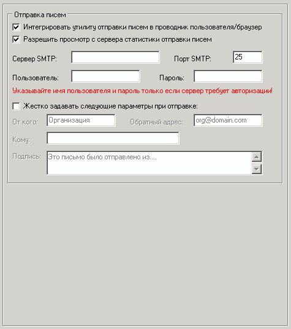

Отправка писем
Указывайте имя пользователя и пароль для подключения к SMTP-серверу только в том случае, если он требует авторизации!
Рекомендуется использовать SMTP-сервер вашего провайдера.
Если использовать популярный бесплатный сервер smtp.mail.ru, то авторизация требуется (указывайте ваш логин и пароль ящика) и в качестве обратного адреса всех писем всегда должен быть указан существующий e-mail на @mail.ru(!). В этом случае поможет опция "Жестко задавать параметры при отправке".
Для сервера smtp.yandex.ru требуется обратный адрес на @yandex.ru и обязательная авторизация с логином и паролем этого ящика.
Если нужно жестко задавать только подпись, тогда поля "От кого" и "Обратный адрес" нужно оставить пустыми.